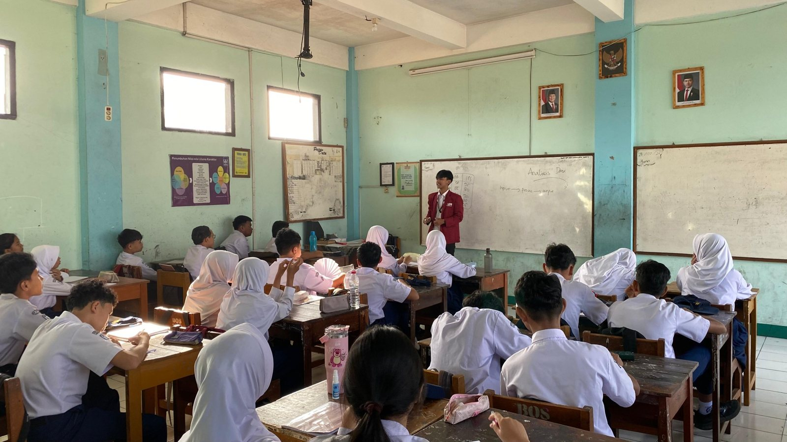
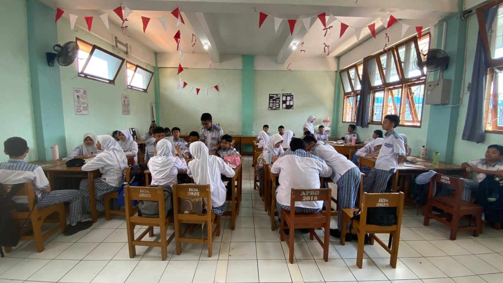
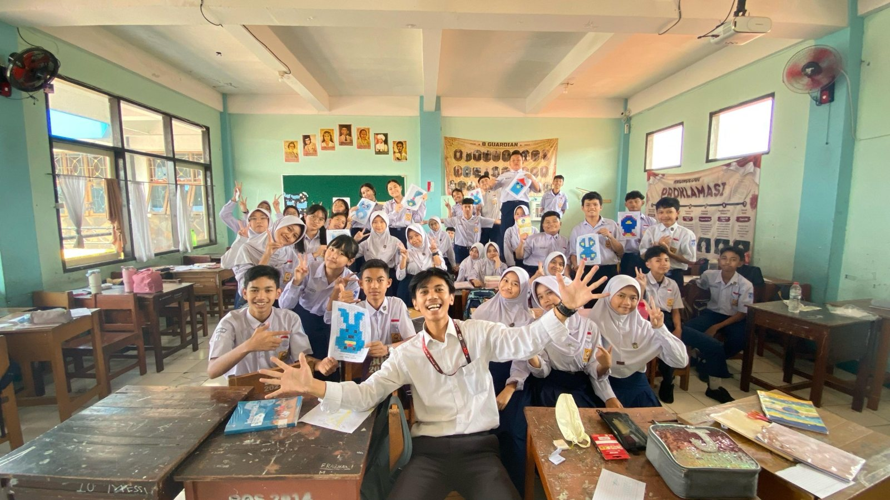
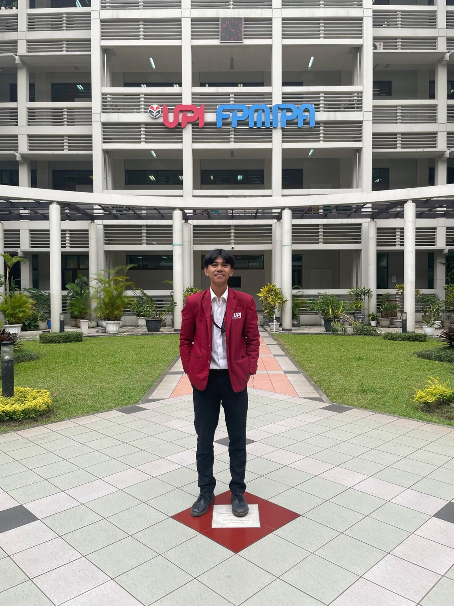
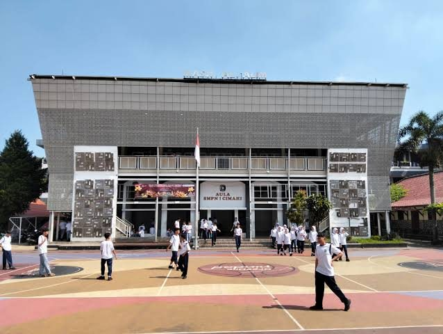
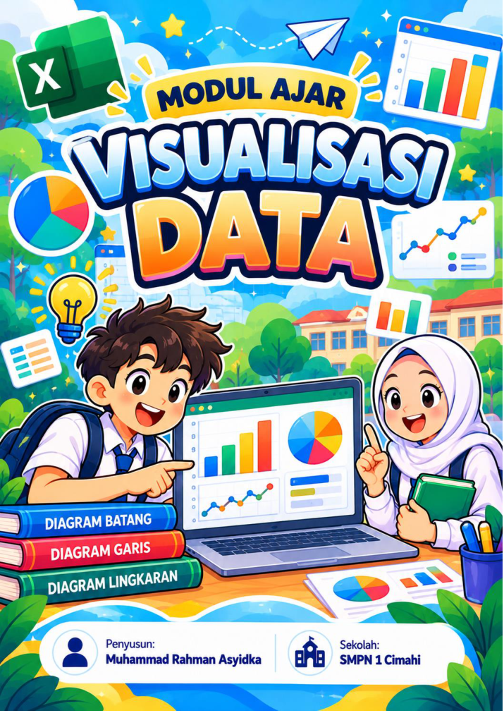
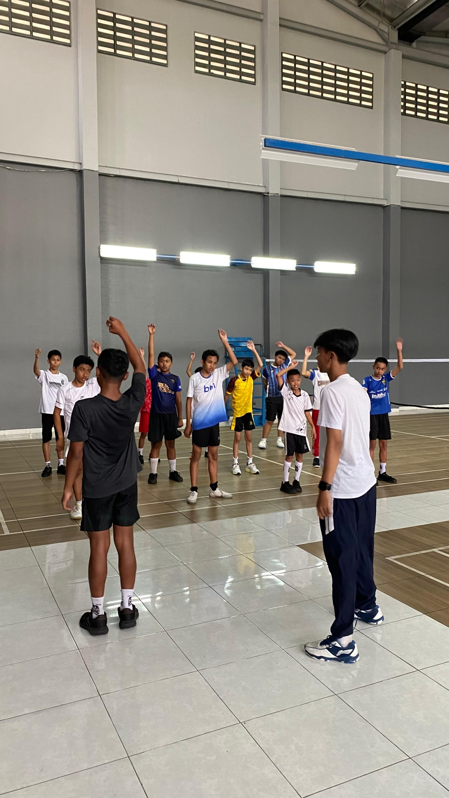

Informatika, Mudah dan Menyenangkan.
Portofolio praktik mengajar, refleksi, dan inovasi pembelajaran Visualisasi Data di SMP Negeri 1 Cimahi.
Jelajahi Portofolio
Dokumentasi praktik, analisis produk, dan perkembangan kompetensi calon guru Informatika.
Profil Guru
Identitas, visi, dan dokumentasi perjalanan sebagai calon pendidik.
Perencanaan Pembelajaran
Tiga modul, sampul, dan analisis rancangan pembelajaran.
Video Praktik Mengajar
Saksikan rekaman kegiatan pembelajaran dari YouTube.
Galeri Praktik Mengajar
Cuplikan proses belajar Informatika bersama murid.




Muhammad Rahman Asyidka
Calon guru Informatika · PPG Universitas Pendidikan Indonesia
Profil Pendidik
Saya merupakan calon guru bidang Informatika yang menempatkan pembelajaran bermakna, mudah dipahami, dan menyenangkan sebagai arah pengembangan profesional. Dalam praktik mengajar mandiri, saya menyusun rangkaian pembelajaran Visualisasi Data yang menghubungkan konteks nyata, kegiatan berkelompok, dan pemanfaatan teknologi.
PPG Calon GuruPendidikan InformatikaSMPN 1 CimahiIdentitas
Visi Pembelajaran
“Informatika, Mudah dan Menyenangkan.”
Saya ingin mengembangkan pembelajaran Informatika yang mendorong rasa ingin tahu, kolaborasi, literasi data, serta kemampuan menjelaskan hasil analisis secara bertanggung jawab.
Dokumentasi Bersama Murid
Perjalanan PPG

Universitas Pendidikan Indonesia
Profil LPTK · UPI Bandung · PPG Bidang Informatika
UPI Bandung
Universitas Pendidikan Indonesia merupakan perguruan tinggi negeri di Bandung yang menyelenggarakan pendidikan dan pengembangan profesi guru. Program PPG menjadi ruang pembelajaran profesional dalam mengembangkan kompetensi pedagogik, kepribadian, sosial, dan profesional.
Bidang Informatika membekali calon guru dengan kemampuan merencanakan, menerapkan, mengevaluasi, dan merefleksikan pembelajaran berbasis teknologi serta kebutuhan murid.
Video Profil Kampus LPTK
SMP Negeri 1 Cimahi
Sekolah tempat pelaksanaan praktik mengajar mandiri bidang Informatika

Identitas Sekolah
Lingkungan Praktik
Sekolah menjadi ruang untuk menerapkan rancangan pembelajaran, mengenali keragaman karakteristik murid, dan mengembangkan keterampilan mengelola kelas. Kegiatan praktik juga mencakup kontribusi nonmengajar melalui piket dan pendampingan kegiatan ekstrakurikuler badminton.
Dokumentasi PPL bersama Rekan

Perencanaan Pembelajaran
Kajian tiga modul Visualisasi Data: Pertemuan 4, 5, dan 6 · Kelas VIII Fase D
Analisis Desain Pembelajaran
Ketiga perangkat ajar menggunakan Problem Based Learning (PBL) dengan alokasi 3 × 35 menit per pertemuan. Rangkaian disusun progresif: memahami tujuan dan jenis grafik, mempraktikkan pembuatan grafik melalui Microsoft Excel, lalu menafsirkan grafik untuk menyusun kesimpulan berbasis data.
Keterkaitan antarmodul merupakan kekuatan utama perencanaan karena murid tidak langsung diminta membuat grafik tanpa memahami kegunaannya. Tantangan yang perlu diperhatikan ialah kecukupan waktu praktik, pemerataan peran kelompok, dan konsistensi rubrik penilaian dengan tujuan pembelajaran.
Dokumen Modul Ajar
Sampul setiap modul ditampilkan bersama dokumen asli.
Modul Visualisasi Data — Kelas VIII / Fase D / 3 × 35 menit.
Baca Modul PDF ↗ Pertemuan 5 · Praktik Membuat Grafik di Excel
Pertemuan 5 · Praktik Membuat Grafik di ExcelModul Visualisasi Data — Kelas VIII / Fase D / 3 × 35 menit.
Baca Modul PDF ↗
Pertemuan 6 · Interpretasi dan Kesimpulan GrafikModul Visualisasi Data — Kelas VIII / Fase D / 3 × 35 menit.
Baca Modul PDF ↗Analisis Berdasarkan Pertemuan
Pengenalan Visualisasi Data
Murid mengenal lima bentuk grafik (bar, column, line, pie, area), membaca unsur grafik, dan memilih grafik sesuai tujuan. Data wisata serta kartu grafik mendukung pembelajaran berbasis masalah sebelum praktik digital.
Praktik Membuat Grafik
Targetnya mengidentifikasi fitur Chart pada Excel, membuat lima jenis grafik, serta memilih visualisasi yang tepat. Indikator keterampilan diturunkan ke aktivitas pemilihan data, pembuatan, pelabelan, dan pemeriksaan grafik.
Membaca dan Menafsirkan Grafik
Murid menganalisis grafik kunjungan dan peminjaman perpustakaan: menemukan nilai ekstrem, menghitung selisih, mengenali pola, dan mempresentasikan kesimpulan yang didukung angka.
Dokumentasi Rancangan dalam Pelaksanaan
Analisis Materi Pembelajaran
Materi Visualisasi Data yang disusun dalam tiga tahap kompetensi
Memahami Grafik
Pertemuan 4: konsep visualisasi, fungsi lima jenis grafik, judul, label, legenda, satuan, dan alasan pemilihan bentuk visual.
Membuat Grafik
Pertemuan 5: fitur Chart pada Microsoft Excel, pemilihan rentang data, konstruksi bar/column/line/pie/area chart, dan penyajian yang mudah dibaca.
Menafsirkan Grafik
Pertemuan 6: membaca skala, nilai maksimum-minimum, selisih, perubahan, dan menyampaikan kesimpulan berdasarkan angka.
Analisis Ketepatan dan Urutan Materi
Urutan mengenali → membuat → menginterpretasikan mendukung perkembangan kemampuan dari pengetahuan konseptual menuju keterampilan prosedural dan penalaran. Konteks wisata dan perpustakaan membuat konsep grafik lebih dekat dengan pengalaman murid.
Kelebihan
Penyajian lima jenis grafik memberi ruang untuk membandingkan fungsi setiap visual; penekanan pada judul, satuan, dan skala membantu mencegah salah tafsir.
Catatan perbaikan
Pembedaan antara bar dan column chart perlu ditegaskan agar murid tidak hanya menghafal orientasi. Latihan juga perlu memperlihatkan contoh grafik yang kurang tepat atau menyesatkan. Penguasaan konsep harus ditelusuri lewat hasil kerja siswa, bukan asumsi.
Dokumentasi Pembelajaran
Analisis Media Pembelajaran
Analisis fungsi, kelebihan, dan keterbatasan media Visualisasi Data
Infografis dan Kartu Grafik
Pertemuan 4. Memudahkan perbandingan grafik batang, kolom, garis, lingkaran, dan area. Media cetak memberi opsi belajar tanpa komputer; perlu dipastikan contoh dan ukurannya mudah dibaca.
Microsoft Excel
Pertemuan 5. Mendukung pengalaman langsung memilih data dan membuat grafik. Kebutuhan pendampingan muncul saat memilih rentang data, judul, dan format tampilan grafik.
LKPD dan Grafik Perpustakaan
Pertemuan 6. Memandu analisis nilai, selisih, tren, dan kesimpulan berbasis bukti. Guru perlu mengamati kontribusi setiap anggota agar kerja kelompok adil.
Evaluasi Kesesuaian Media
Media dipilih sesuai kompetensi: contoh visual untuk pengenalan, perangkat lunak untuk praktik, dan grafik/LKPD untuk interpretasi. Kombinasi media analog dan digital dapat membantu mengakomodasi kondisi fasilitas pembelajaran yang berbeda.
Tindak Lanjut
Menyiapkan template Excel dan contoh grafik yang jelas, menambahkan pertanyaan evaluasi kritis, serta menyediakan lembar pengecekan untuk memastikan semua murid memahami hubungan antara tabel sumber dan hasil visualisasi.
Galeri Penggunaan Media
Video Praktik Mengajar
Rekaman pembelajaran Informatika sebagai bahan analisis dan refleksi
Rekaman Pelaksanaan Pembelajaran
Panduan Analisis Video Praktik Mengajar
Rekaman dapat ditelaah menggunakan indikator pembukaan dan apersepsi, penyampaian tujuan, kualitas pertanyaan, pengorganisasian murid, pemberian umpan balik, pemanfaatan media, pemerataan partisipasi, serta penutup dan asesmen. Identifikasi segmen menit-detik, bukti tindakan guru, respons murid, dan perbaikan yang diperlukan.
Dokumentasi Pendukung Video
Kegiatan Nonmengajar
Pengalaman mendukung budaya sekolah di luar kegiatan pembelajaran kelas.

Ekstrakurikuler Badminton
Partisipasi dalam kegiatan olahraga dan pengembangan minat bakat peserta didik.
Analisis Kegiatan Badminton
Bentuk partisipasi
Saya mengikuti kegiatan ekstrakurikuler badminton sebagai bagian dari keterlibatan dalam kehidupan sekolah di luar kegiatan mengajar. Dokumentasi menunjukkan sekelompok peserta didik melakukan aktivitas bersama di lapangan olahraga.
Nilai pendidikan
Kegiatan ekstrakurikuler menjadi ruang pengembangan disiplin, kerja sama, sportivitas, dan komunikasi antarpeserta didik.
Refleksi
Pengalaman ini memperluas pemahaman bahwa peran pendidik tidak hanya berkaitan dengan penyampaian materi, tetapi juga mendampingi tumbuhnya karakter dan minat peserta didik.
Tindak lanjut
Memahami kebutuhan peserta didik dalam aktivitas nonakademik serta meningkatkan komunikasi dan kepedulian terhadap kegiatan sekolah.
Kegiatan Piket Sekolah
Saya juga berpartisipasi dalam kegiatan piket sebagai bagian dari tanggung jawab dan kerja sama warga sekolah. Kegiatan piket menjadi kesempatan untuk memahami kedisiplinan, rutinitas sekolah, dan pentingnya koordinasi dalam menjaga kelancaran kegiatan pendidikan.
Analisis & Pembelajaran
Partisipasi dalam tugas piket melatih sikap tanggung jawab, ketepatan waktu, komunikasi, serta kesiapan membantu kebutuhan operasional sekolah. Pengalaman ini relevan dengan kompetensi sosial dan kepribadian guru.
Refleksi
Kegiatan rutin sekolah menuntut konsistensi. Saya perlu terus belajar berinisiatif, mengenali alur kerja sekolah, serta berkolaborasi secara profesional dengan guru dan tenaga kependidikan.
Dokumentasi Piket
Ruang untuk foto kegiatan piket sekolah
Dokumentasi piket dan rincian tugas harian dapat ditambahkan setelah foto serta catatan kegiatan tersedia.
Dokumentasi PPL bersama Rekan
Instrumen Penilaian dan Analisis
Rancangan asesmen Visualisasi Data sesuai TP pertemuan 4–6
Desain Asesmen
Modul ajar memuat asesmen diagnostik, penilaian proses, LKPD/unjuk kerja, dan kriteria ketercapaian tujuan pembelajaran (KKTP) dengan kategori BB, MB, BSH, dan SB. Penilaian perlu memeriksa pemahaman, keterampilan membuat grafik, dan ketepatan penafsiran data.
Pertemuan 4
Identifikasi lima jenis grafik, membaca informasi grafik, dan memilih grafik berdasarkan tujuan. Bukti: jawaban diagnostik dan LKPD kelompok.
Pengetahuan & PenalaranPertemuan 5
Menggunakan fitur Chart Microsoft Excel; membuat dan memberi judul grafik bar, column, line, pie, area. Bukti: berkas pekerjaan/unjuk kerja.
Keterampilan PraktikPertemuan 6
Menentukan ekstrem, menghitung selisih, menafsirkan pola, menyampaikan dua temuan berbasis angka, dan menanggapi pertanyaan.
Analisis & KomunikasiAnalisis dan Tindak Lanjut Asesmen
Kekuatan perangkat adalah keterkaitan indikator dengan sasaran pembelajaran. Penggunaan rubrik deskriptif membantu guru mengamati progres, tetapi memerlukan bukti individual agar capaian masing-masing murid tidak tertutup hasil kelompok.
Perbaikan diarahkan pada checklist observasi, rubrik unjuk kerja yang spesifik, pertanyaan keluar kelas (*exit ticket*), dan umpan balik yang mengarahkan murid pada koreksi pemilihan grafik maupun interpretasi angka.
Instrumen dalam Modul Asli
Buka rubrik dan lampiran pada setiap PDF.
Modul Visualisasi Data — Kelas VIII / Fase D / 3 × 35 menit.
Baca Modul PDF ↗Pertemuan 5 · Praktik Membuat Grafik di ExcelModul Visualisasi Data — Kelas VIII / Fase D / 3 × 35 menit.
Baca Modul PDF ↗Modul Visualisasi Data — Kelas VIII / Fase D / 3 × 35 menit.
Baca Modul PDF ↗Refleksi Diri dan Tindak Lanjut
Mengembangkan pembelajaran Informatika yang mudah dipahami dan menyenangkan
Refleksi Perencanaan Pembelajaran
Dalam menyusun modul Visualisasi Data, saya belajar bahwa murid perlu memahami alasan memilih grafik sebelum diminta membuatnya. Karena itu, saya merencanakan pembelajaran bertahap dari pengenalan grafik, praktik Microsoft Excel, hingga membaca hasil dan menyampaikan kesimpulan. Pendekatan berbasis masalah membantu menghubungkan materi dengan data yang dekat dengan kehidupan sehari-hari.
Pengalaman berada di kelas mengingatkan saya bahwa penjelasan yang jelas perlu disertai pertanyaan, latihan, dan pendampingan. Foto dokumentasi menunjukkan kegiatan presentasi guru dan diskusi murid, tetapi keberhasilan setiap murid tetap harus dikaji dari bukti penilaian.
Kekuatan yang Dikembangkan
- Menyiapkan modul PBL dengan alur kompetensi bertahap.
- Menggunakan beragam media digital dan non-digital.
- Mendampingi aktivitas dan diskusi kelompok.
- Membangun relasi melalui kegiatan kelas dan nonmengajar.
Area yang Perlu Ditingkatkan
- Membuat instruksi praktik lebih ringkas dan terukur.
- Memastikan seluruh murid mendapat peran belajar.
- Memperkuat asesmen individual dan umpan balik.
- Menggunakan rekaman video untuk merefleksikan interaksi kelas.
Rencana Tindak Lanjut
Mengumpulkan bukti proses dan hasil belajar
Melengkapi LKPD, contoh grafik karya murid, catatan observasi, dan rekap asesmen yang sudah dianonimkan.
Mengevaluasi video praktik mengajar
Mencatat momen pertanyaan, pendampingan, aktivitas siswa, dan manajemen waktu beserta menit tayangan.
Menyempurnakan modul dan media
Menyusun panduan praktik yang lebih jelas, contoh grafik kurang tepat, dan rubrik kinerja individual.
Galeri Perjalanan Praktik